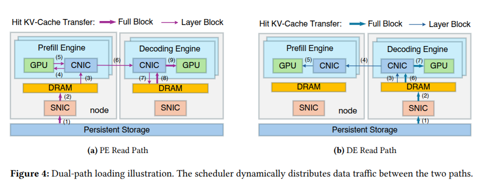

flowchart LR
S[(KV-Cache<br/>external storage)] -->|Storage to Prefill<br/>traditional path| P[Prefill Engine]
S -->|Storage to Decode<br/>new path| D[Decode Engine]
D -->|RDMA over<br/>compute network| P
G{{Global Scheduler<br/>disk queues / node load}} -.routes & balances.-> S
LLM Efficiency Agents Research paper
DualPath: Breaking the Storage Bandwidth Wall for KV-Cache Loading in Agentic Inference

Key Innovation
DualPath stops treating KV-Cache loading as a single, prefill-only pipe. By adding a Storage-to-Decode path — loading the cache into otherwise-idle decode engines and forwarding it to prefill over the high-speed RDMA compute network — it aggregates storage bandwidth across both engine pools and lets a global scheduler balance the traffic in real time.
Modern LLM serving has largely moved to a disaggregated design: separate pools of prefill engines (which ingest the prompt and build the KV-Cache) and decode engines (which generate tokens one at a time). This split lets each stage scale on its own hardware profile. But it was designed for chat-style traffic, where each request is short-lived and starts roughly fresh.
AI agents break that assumption. An agent loops through tool calls, observations, and reasoning steps, accumulating an enormous, ever-growing context that must persist across turns. Re-computing that context every turn is wasteful, so production systems cache it externally and reload the KV-Cache from storage at the start of each new turn. Suddenly the bottleneck is not FLOPs — it is how fast you can move terabytes of cached state off disk and into GPU memory.
The storage I/O wall
Here is the asymmetry DualPath targets. In a standard disaggregated stack, the KV-Cache is always loaded along a single route: storage → prefill engine. That makes intuitive sense — prefill is where the cache is consumed — but it has an ugly consequence at scale.
The prefill engines’ network cards become a saturated funnel. Every byte of historical context for every agent turn has to squeeze through that one set of NICs. Meanwhile, the decode engines — which have their own perfectly good high-bandwidth network interfaces — sit with their storage-facing links almost completely idle during the loading phase. Half the cluster’s ingest bandwidth is stranded.
As agent context grows, this turns into a hard storage I/O wall: throughput stops scaling with compute and starts being dictated by how much data you can drag across the prefill NICs per second.
The solution: dual-path loading
DualPath’s core move is to open a second loading route — storage → decode — and then treat the two routes as a single aggregated bandwidth pool. Three pieces make this work:
- Dual routing. For each KV-Cache load, the system decides dynamically whether to pull it straight into a prefill engine (the classic path) or to stage it through an idle decode engine instead. The decision is driven by where bandwidth is actually available right now.
- RDMA forwarding. When the cache lands in a decode engine, it doesn’t stay there. It is forwarded to the prefill engine over the RDMA compute network — the same fast interconnect already used for execution-time communication — so the data arrives where it’s needed without ever touching the congested prefill storage links.
- Global scheduling. A traffic controller continuously watches disk queues and per-node load, splitting and steering loads so that the extra decode-path traffic never starves the latency-critical execution messages that share the compute fabric.
The net effect: instead of one pipe rated at the prefill NICs’ bandwidth, you get roughly the sum of the prefill and decode ingest bandwidth, allocated wherever the queues are shortest.
What makes the decode path “free” is timing. During the loading phase, decode engines have spare network capacity because their heavy generation work hasn’t started yet for that turn. DualPath claims that idle window and uses it to pre-stage cache, then hands it off over RDMA — turning a structural inefficiency of disaggregation into a second supply line.
The scheduler is what keeps this from backfiring. Naively dumping load traffic onto the compute network would collide with the tiny, latency-sensitive control and activation messages that decode relies on. By monitoring queue depth and node load globally, the controller throttles and routes the bulk KV transfers so they fill the gaps rather than blocking the critical path.
Real-world performance
Evaluated on production-level agent traces, DualPath delivers gains that come purely from better bandwidth utilization — no model changes, no quality trade-off:
| Setting | Metric | Improvement |
|---|---|---|
| Offline inference | Throughput | up to 1.87× |
| Online serving | Throughput (within SLOs) | avg 1.96× |
The online number is the headline: nearly doubling serving throughput without violating latency SLOs means the extra decode-path traffic genuinely slots into idle capacity rather than stealing from user-facing latency. The improvement scales with how cache-loading-bound the workload is — exactly the regime long-horizon agents live in.
Key Result
On production agent traces, DualPath raises offline throughput by up to 1.87× and online serving throughput by an average of 1.96× while respecting latency SLOs — entirely by aggregating prefill- and decode-side storage bandwidth, with no change to the model.
Takeaway
DualPath’s real contribution is a reframing: at agent scale, inference is a memory-fabric and I/O problem, not just a compute problem. Once you accept that, the fix is almost obvious in hindsight — you have two pools of network interfaces and you were only using one of them for loading. By opening a Storage-to-Decode path, forwarding over RDMA, and policing the traffic with a global scheduler, DeepSeek recovers bandwidth that disaggregated architectures were leaving on the floor.
It also pairs naturally with the rest of DeepSeek’s efficiency playbook — the same instinct that produced DualPipe’s pipeline-bubble elimination shows up here as NIC-bubble elimination. As agents push context lengths and turn counts ever higher, treating every idle link as usable bandwidth is likely to become a standard part of how long-context serving systems are built.